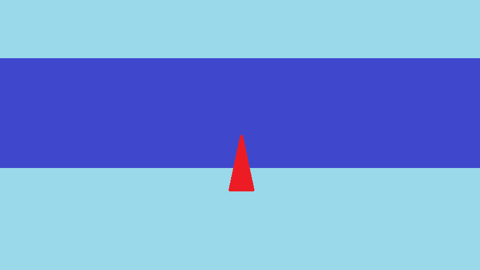
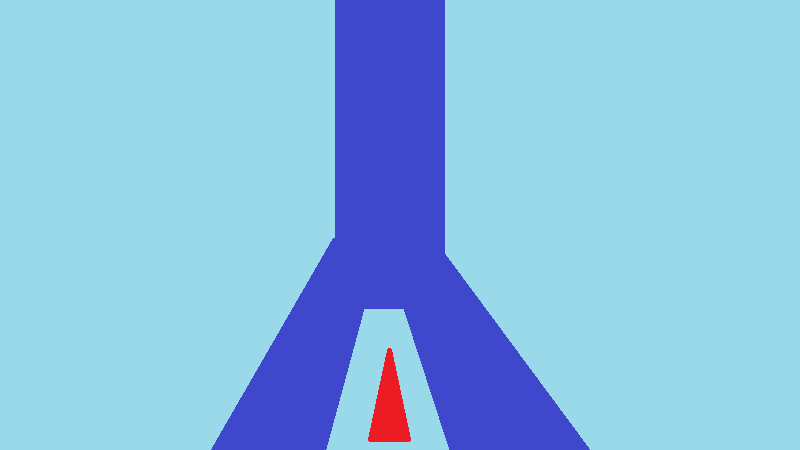

Guiding Light VR
Become a lighthouse keeper at the frozen pole of the world. Guide incoming ships to harbour, keep the power flowing, and hold out as long as you can — all from inside a cozy arctic lighthouse in virtual reality.
About the game
Guiding Light VR is a first-person reimagining of the original Guiding Light — rebuilt from the ground up for virtual reality on Meta Quest headsets. Where the original was a top-down time-management game, GLVR places you physically inside the lighthouse: you reach out to turn the beacon, manage power manually, and feel the growing pressure of an endless arctic shift.
The game's endless runner structure means the pace never stops escalating — more ships arrive, demands pile up, and the chaos grows until you can't keep up. Three levels each demand a different strategy, giving the game replayability beyond chasing a high score.
Gallery


Gameplay
- First-person lighthouse management
- Beacon rotation & power management
- Endless runner escalation loop
- Immersion-first VR controls
- Physical object interaction
- Ship guidance under time pressure
- 3 levels with distinct strategies
- Arctic atmosphere & cozy setting
My Contributions
Game Design
As a designer, I was responsible for proposing the porting of the Guiding Light game project to VR, preparing VR gameplay rules, supporting programmers in transferring the gameplay logic of the original project, and solving design problems during production.
PC to VR
As a VR gamer, I knew the advantages of this hardware and what I wanted to achieve by porting Guiding Light to VR. Most of the fun in VR games comes from the player's interesting physical interactions with the environment. Therefore, physically controlling the lighhous's spotlight was the foundation upon which the rest of the project was built.
My goal wasn't to replicate the original game 1:1, so all the mechanics related to exiting the lighthouse—about half of the original game—have disappeared from the VR version. These elements have been either simplified or replaced with additional mechanics inside the lighthouse. For example, there's no longer a distinction between cargo ships and food ships; there are still two types of ships (three if you count pirates), but both grant the player points, just like food ships, but they must be led to different bays.
The improvements from the original, namely upgrading lighthouse and flash, which required exiting the lighthouse, have been forged into two complex interactions. The lantern contains a light bulb and a thickly braided cord. Pulling it activates the flash, stopping all ships and shattering the bulb. After a while, a helpful penguin will bring us another bulb, but the player must physically take it and screw it into the lampshade. Upgrading lighthouse has been replaced by a generator, in which if the energy runs out, the lighthouse light goes out completely. To maintain the energy level, the generator must be wound with a crank. This concept is reiteration of similiar idea from one of the prototypes of the original, but there it created a negative interaction where lack of energy severly punish the player, here it fit perfectly. Although both of these actions are now located in the lighthouse, they serve the same purpose as in the original concept. In order to use these items, the player had to exit the lighthouse, losing control of the light. In the VR version, players also lose control of the light when engaged in other activities because they cannot hold the spotlight, at least not with both hands, and controlling the heavy spotlight with one hand is more difficult.
Light control has also undergone some changes. Because we control the spotlight with our hands rather than with the mouse, ship control isn't as precise. Therefore, some ships often accidentally get caught in the beam of light when the player tries to quickly point the spotlight in a completely different direction. To avoid player frustration, we've added an additional feature not present in the original: the ability to temporarily turn off the light while moving the spotlight.
Level Design
Although I wasn't a level designer in this project, together with Michał Galiński we created a concept for modifying the level structure. Whereas in the original Guiding Light the levels stretched across and the lighthouse was located halfway along its path, in Guiding Light VR the lighthouse stands at the head of the river, giving it a complete view of it.

Guiding Light Level Structure.
Guiding Light VR Level Structure.Credits
| Miłosz Kawczyński | Design |
| Michał Galiński | Programming & Production & Voice Acting |
| Jędrzej Huzarski | 3D |
| Mikołaj Przybylski | Design & Programming |
| Karolina Sołtysiak | 2D & 3D |
| Michał Świstak | Sound Design |